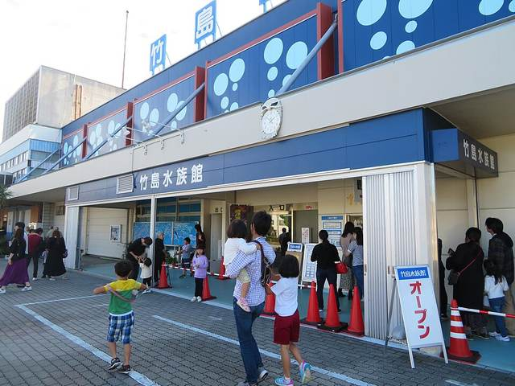

豐川稻荷＋蒲郡竹島 一日遊（從名古屋出發）
日本三大稻荷逢72年一次御開帳，下午漫步三河灣竹島
早上搭名鐵特急（平日）或 JR 新快速＋青空フリーパス（11/3 假日）到豐川，8:30 前後就能參拜豐川稻荷，剛好遇上 2026 年 11/1–11/23「72 年一次」的御開帳特別拜觀，中午在表參道吃豐川稻荷壽司。12:09 搭 JR 經豐橋到蒲郡（12:43），下午走竹島橋、拜八百富神社，可加竹島水族館，16:01 新快速回名古屋。新幹線最多只快 12 分鐘卻貴一倍，不建議。
| 07:08 | 離開飯店，步行 3 分到伏見站 1 號出口 |
| 07:18 | 東山線 伏見 → 名古屋（07:20 到） |
| 07:20 | 地下通道步行到名鐵名古屋站（5–8 分） |
| 07:32 | 名鐵 特急 豊橋行（一般車）→ 國府 08:17 |
| 08:25 | 國府轉 豐川線 豊川稲荷行 → 08:36 豐川稻荷站 |
| 08:42 | 走表參道到總門 |
| 08:45 | 豐川稻荷：山門・大本殿・千本幟・奧之院・靈狐塚（＋御開帳特別拜觀） |
| 10:45 | 表參道吃豐川稻荷壽司／早午餐 |
| 11:55 | 步行到 JR 豐川站 |
| 12:09 | JR 飯田線 → 豐橋 12:24；12:32 快速 大垣行 → 蒲郡 12:43 |
| 12:45 | 蒲郡站南口步行約 15 分到竹島 |
| 13:00 | 竹島橋・八百富神社・繞島步道 |
| 14:15 | （選配）竹島水族館 |
| 15:20 | 步行回蒲郡站 |
| 16:01 | JR 新快速 大垣行 → 16:43 名古屋（或 15:43 快速 → 16:28） |
| 16:50 | 東山線回伏見，或在名古屋站吃晚餐 |
| 06:55 | 離開飯店（青空フリーパス請前一天先買好） |
| 07:04 | 東山線 伏見 → 名古屋（07:06 到；06:57 那班更保險） |
| 07:13 | JR 新快速 豊橋行 → 豐橋 08:08 |
| 08:12 | 豐橋轉 JR 飯田線 天竜峡行（2 號月台）→ 08:24 豐川 |
| 08:30 | 豐川稻荷：趁早參拜，避開 10 點後的假日人潮 |
| 10:45 | 表參道吃稻荷壽司；11/3 境內另有攤販與キッチンカー |
| 11:55 | 步行到 JR 豐川站 |
| 12:09 | JR 飯田線 → 豐橋 12:24；12:32 快速 → 蒲郡 12:43 |
| 12:45 | 步行約 15 分到竹島 |
| 13:00 | 竹島橋・八百富神社・繞島步道 |
| 14:15 | （選配）竹島水族館（假日人多） |
| 15:20 | 步行回蒲郡站 |
| 16:01 | JR 新快速 → 16:43 名古屋（青空フリーパス可搭） |
| 16:50 | 東山線回伏見（地鐵另付 210 日圓） |
07:18–07:2007:04–07:06伏見 → 名古屋（地下鐵東山線）
從 Prince Smart Inn 名古屋栄 步行約 3 分鐘到伏見站 1 號出口，搭東山線往「高畑」方向 2 站到名古屋，約 2 分鐘。平日早上約 4 分鐘一班，假日約 6–7 分鐘一班。到名古屋站後：平日走地下通道到「名鉄名古屋」站（約 5–8 分鐘）；11/3 假日走到 JR 東海道線月台。
- 路線
- 名古屋市營地下鐵 東山線
- 區間
- 伏見 → 名古屋
- 上車
- 伏見站 2 號月台（往 高畑 方向）
- 方向
- 高畑 方向
- 班次
- 平日 07:18 發（07:14、07:22 也可）／假日 07:04 發（06:57 更保險）
- 車程
- 約 2 分
- 票價
- 210 日圓（IC 與車票同價）
- IC 卡
- 可直接刷 TOICA／ICOCA／Suica／manaca
- 有 IC 卡：直接在閘門感應即可；建議先儲值到 3,000 日圓以上（地鐵、名鐵、JR 都會用到）
- 沒有 IC 卡：售票機按「English」，買 210 日圓車票
- 名古屋站地下很大：出東山線閘門後跟著「名鉄線 Meitetsu」或「JR線」指標走，不用上到地面。
07:32–08:36（假日推薦改搭 JR＋青空フリーパス，見下一段；若仍搭名鐵：急行 07:11 → 國府 08:08／08:12 → 豐川稻荷 08:24）名鐵：名鉄名古屋 → 國府 → 豐川稻荷（平日推薦）

名鐵 豐川稻荷站・ButuCC, CC BY-SA 4.0, https://commons.wikimedia.org/wiki/File:MT-Toyokawa-inari_Station-Building_2022.jpg 這是 CP 值最高的去程：1,270 日圓，比新幹線便宜一半，下車就在豐川稻荷表參道旁。平日搭 07:32「特急 豊橋行」，坐「一般車」（免費自由座）即可，在國府（こう）站下車，同站轉「豊川線 豊川稲荷行」4 站到終點。國府轉車有 8 分鐘，走到 5 號月台即可。
- 路線
- 名鐵名古屋本線 特急 → 國府轉 名鐵豐川線
- 區間
- 名鉄名古屋 → 豊川稲荷
- 上車
- 名鉄名古屋站（Yahoo 顯示 4 號線；同一月台依目的地分乘車位置，請找標示「豊橋」的乘車位置與一般車車廂）；國府站 5 號線轉豐川線
- 方向
- 豊橋 方向 → 國府轉 豊川稲荷 方向
- 班次
- 平日：特急 豊橋行 07:32 → 國府 08:17；豐川線 豊川稲荷行 08:25 → 08:36。下一班：特急 07:44 → 豐川稻荷 08:53
- 車程
- 約 56 分
- 票價
- 1,270 日圓（IC 與車票同價）
- IC 卡
- 可直接刷 TOICA／ICOCA／Suica／manaca
- 有 IC 卡：直接刷卡進名鐵閘門，到豐川稻荷站刷卡出站，自動扣 1,270 日圓
- 買紙票：名鐵售票機選「English」→ 選 1,270 日圓（或在螢幕路線圖點「豊川稲荷」）
- 特急的「特別車（μ席，指定席）」要另買 ミューチケット，不需要；請上一般車（車門旁沒有「特別車」標示的車廂）
- 不用買新幹線票，一張 IC 卡搞定
- 到站就在表參道旁
- 名鐵名古屋站同一月台會停不同目的地的列車，上車前確認看板寫「豊橋」
- 在國府站一定要下車換「豊川稲荷」行，不要坐到豐橋
—（平日不建議；平日同路線 07:18 新快速 → 豐川 08:41，IC 1,520 日圓）07:13–08:24JR：名古屋 → 豐橋 → 豐川（11/3 假日推薦，用青空フリーパス）

豐橋站（轉乘站）・EXECUTOR, CC0, https://commons.wikimedia.org/wiki/File:Toyohashi_Station_2.jpg 
飯田線 313系（豐川站）・Toshinori baba, CC BY-SA 3.0, https://commons.wikimedia.org/wiki/File:313_R112.JPG 11/3 是日本國定假日（文化之日），JR 東海的「青空フリーパス」（2,620 日圓）可在名古屋周邊 JR 普通／快速列車一日無限搭，涵蓋今天所有 JR 路段（名古屋→豐橋→豐川→豐橋→蒲郡→名古屋），比逐段刷 IC（3,030 日圓）省 410 日圓。搭 07:13 新快速到豐橋（08:08），同站轉 08:12 飯田線，08:24 到豐川，跟名鐵一樣早到。
- 路線
- JR 東海道本線 新快速 → 豐橋轉 JR 飯田線
- 區間
- 名古屋 → 豊川
- 上車
- 名古屋站 東海道線月台（豊橋方向，通常 2 或 3 號線，以電子看板為準）；豐橋站轉 2 號線飯田線
- 方向
- 豊橋 方向 → 飯田線 天竜峡行
- 班次
- 假日：新快速 豊橋行 07:13 → 豐橋 08:08；飯田線 天竜峡行 08:12 → 豐川 08:24（下一班 08:25 → 08:41）
- 車程
- 約 67 分
- 票價
- 持青空フリーパス 免費（一日券 2,620 日圓）；不用票則 IC 1,520 日圓
- IC 卡
- 可刷 TOICA 等 IC（1,520 日圓）；若用青空フリーパス，請把紙票插入閘門，不要刷 IC
- 建議前一天（11/2）在 JR 名古屋站的「指定席券売機」或 JR 售票處（きっぷうりば）先買好，乘車日選 11/3
- 機器操作：選「English」→ 找優惠票「Discount tickets／おトクなきっぷ」→「青空フリーパス Aozora Free Pass」→ 日期 11/3、大人 1 張 → 現金或信用卡
- 找不到選項就到 JR 售票處出示文字：「青空フリーパス 11月3日 大人1枚」
- 當天進出 JR 閘門都把紙票插入閘門並取回；飯田線豐橋–豐川、東海道線蒲郡都在範圍內
- 青空フリーパス不能搭新幹線、名鐵與地鐵；只限週六、週日、國定假日（11/4 週三不能用）
- 假日最省：一張票搭整天 JR
- 豐橋站內轉乘，免出站
- 豐橋轉車只有 4 分鐘：下車後跟「飯田線 Iida Line」指標到 2 號月台；沒趕上的話 08:25 還有一班（到豐川 08:41）
08:36–08:4208:24–08:30車站 → 豐川稻荷 總門（步行約 5 分）

JR 豐川站・Saigen Jiro, CC0, https://commons.wikimedia.org/wiki/File:Toyokawa_Station_(Aichi),_ekisha.jpg 名鐵豐川稻荷站和 JR 豐川站幾乎相鄰。出站後跟著「豊川稲荷」指標走進表參道商店街，官方標示步行約 5 分鐘到總門（正門）。早上 8 點多店家多半還沒開，先參拜、回程再逛表參道最順。
- 路線
- 徒步
- 區間
- 名鐵 豊川稲荷站／JR 豊川站 → 豊川稲荷 総門
- 上車
- 出站後依「豊川稲荷」指標
- 方向
- 表參道方向
- 班次
- —
- 車程
- 約 5 分
- 票價
- 免費
- IC 卡
- 不需要
08:45–10:4508:30–10:45豐川稻荷（妙嚴寺）：山門・大本殿・奧之院・靈狐塚

豐川稻荷 山門・Bariston, CC BY-SA 4.0, https://commons.wikimedia.org/wiki/File:Toyokawainari5.JPG 
豐川稻荷 大本殿・Bariston, CC BY-SA 4.0, https://commons.wikimedia.org/wiki/File:Toyokawainari_honden.jpg 
奧之院・Bariston, CC BY-SA 4.0, https://commons.wikimedia.org/wiki/File:Toyokawainari3.JPG 
靈狐塚的狐狸石像群・Kuroshiononeko, CC0, https://commons.wikimedia.org/wiki/File:Toyokawa_Inari_Reikozuka_-_many_foxes.jpg 日本三大稻荷之一，正式名稱是曹洞宗「圓福山 妙嚴寺」，是寺院不是神社。境內參拜免費：總門 5:00–18:00 開門；大本殿、奧之院、萬堂 7:30–15:30 開扉。2026 年 11/1–11/23 正逢「72 年一次」的御開帳（秘佛御前立尊像特別公開），期間有「特別諸堂拜觀」（本殿 500 日圓起，8:00–16:00，只收現金、免預約），可進入平常只有祈禱者能進的本殿區域。建議路線：總門 → 山門 → 大本殿 → 千本幟參道 → 奧之院 → 靈狐塚 → 經萬燈堂、大黑堂回本殿，約 1.5–2 小時。
- 山門（1536 年今川義元寄進，境內最古老建築）約 5 分
- 大本殿（祀豐川吒枳尼眞天）參拜 15 分；御開帳期間本殿前有「御縁柱」與五色「善之綱」，觸摸可結緣
- 千本幟參道：紅白奉納旗一路延伸到奧之院，約 10 分
- 奧之院（1814 年建，由舊本殿拜殿移築）約 10 分
- 靈狐塚：1,000 尊以上信眾奉納的狐狸石像布滿山坡，最好拍，約 20 分
- 萬燈堂（禪堂）、大黑堂「撫摸大黑天」約 15 分
- 選配：御開帳特別諸堂拜觀（本殿 500 日圓；本殿＋法堂＋萬堂＋襖繪 套票 1,500 日圓）約 30–45 分
- 11/3 國定假日正值御開帳：境內有約 30 家攤販、10:00 起キッチンカー、17:00 綱火奉納，人潮會很多，建議 9 點前進場
- 夜間點燈「ヨルモウデ」只在 11/1–3 與每週五六日 17:00–21:00，11/4（週三）沒有；本計畫中午就離開
- 特別諸堂拜觀只收現金；御朱印、御守授與時間 8:00–15:50
- 祈禱（5,000 日圓起）可參拜御前立尊像，本行程不含
10:45–11:5510:45–11:55表參道吃豐川稻荷壽司・早午餐

豐川稻荷 表參道・Bariston, CC BY-SA 4.0, https://commons.wikimedia.org/wiki/File:Toyokawainari6.JPG 
豐川稻荷壽司（示意）・Lombroso, CC BY-SA 3.0, https://commons.wikimedia.org/wiki/File:Toyokawa_inari-zushi_(2010.11.07).jpg 豐川稻荷門前的表參道（門前町）有上百家店，名物是「豐川いなり寿司」，從傳統五目稻荷到加味噌豬排、山葵葉、鰻魚的創作口味都有，一顆約 170–300 日圓，可邊走邊吃。10:45 時多數外帶店已開，內用餐廳多從 10:00–11:00 開始。
- 門前そば 山彦：約 100 年老店，「いなほ稲荷寿司」7 個 900 日圓、稲荷門前きしめん；外帶 8:30–17:00、內用約 10:00–16:00；週四公休（遇 1 日、假日、大祭照常）→ 11/3、11/4 都有開
- 和食処 松屋（三河の逸膳 松屋）：總門前三代老店，創作いなり；外帶約 10:00–17:00、內用 11:00–14:30；週一與第 3 個週二休（遇假日營業）→ 11/3、11/4 都有開
- おきつね本舗：炙烤油豆腐皮夾豬排的「おきつねバーガー」350 日圓、味噌カツいなり；10:00–17:00；週二、週三公休（遇假日營業）→ 11/3 有開、11/4（週三）可能公休
- 千石寿し：稍遠（名鐵站步行 5 分），親子いなり、鰻いなり；11:30–14:00
- 店家營業時間來自 2024–2025 年旅遊網站資料，御開帳期間可能延長或變動，以現場為準
- 想帶回去當點心：稻荷壽司常溫可放幾小時，當天傍晚前吃完較安全
12:09–12:4312:09–12:43JR 豐川 → 豐橋 → 蒲郡
從表參道走回 JR 豐川站（約 5 分），搭飯田線到終點豐橋，站內轉東海道線「快速 大垣行」（往名古屋方向）2 站到蒲郡。豐橋轉車 8 分鐘，不用出站。原稿寫 12:00 出發、約 13:00 到蒲郡；實際 12:09 的車 12:43 就到，竹島可多玩約 17 分鐘。
- 路線
- JR 飯田線 → 豐橋轉 JR 東海道本線 快速
- 區間
- 豊川 → 蒲郡
- 上車
- 豐川站 2・3 號線（豐橋行）；豐橋站 1 號線到達 → 6 號線「快速 大垣行」
- 方向
- 豊橋 方向 → 東海道線 名古屋・大垣 方向
- 班次
- 飯田線 12:09 → 豐橋 12:24；快速 大垣行 12:32 → 蒲郡 12:43。下一班：12:39 → 豐橋 12:54／13:02 快速（7 號線）→ 蒲郡 13:15
- 車程
- 約 26 分
- 票價
- 510 日圓（IC 與車票同價）；持青空フリーパス免費
- IC 卡
- 可直接刷 TOICA／ICOCA／Suica／manaca（豐川在 TOICA 區域內；豐橋站內轉乘不出站，到蒲郡刷卡出站一次扣款）
- 有 IC 卡：JR 豐川站直接刷卡進站，到蒲郡刷卡出站
- 無 IC 卡：在豐川站售票機買到「蒲郡」510 日圓的票
- 持青空フリーパス：插票進出閘門
- 名鐵豐川稻荷站沒有車到蒲郡，請走到隔壁的 JR 豐川站
12:45–13:0012:45–13:00蒲郡站南口 → 竹島（步行約 15 分）

JR 蒲郡站・Lombroso, CC BY-SA 4.0, https://commons.wikimedia.org/wiki/File:Gamagori_Station_(2018-05-19)_02.jpg 從 JR 蒲郡站「南口」出站往海邊走，官方標示步行約 15 分鐘到竹島橋頭（竹島園地）。也有名鐵巴士「西浦病院循環バス（左まわり）」從南口 2 號站牌到「竹島遊園」，但班次不多，步行最實際。蒲郡站內「ナビテラス」可租電動輔助自行車（1 次 1,000 日圓）。
- 路線
- 徒步（或 名鐵巴士 西浦病院循環 左回り）
- 區間
- 蒲郡站 南口 → 竹島園地（竹島橋頭）
- 上車
- 南口出站（巴士為南口 2 號站牌）
- 方向
- 往南（海邊）
- 班次
- —
- 車程
- 約 15 分
- 票價
- 步行免費
- IC 卡
- 步行不需要（巴士能否刷 IC 未查證）
13:00–14:1513:00–14:15竹島：竹島橋・八百富神社・繞島步道

竹島與竹島橋・Alpsdake, CC BY-SA 4.0, https://commons.wikimedia.org/wiki/File:Take_Island_and_Bridge.jpg 
八百富神社 拜殿・Yanajin33, CC BY-SA 3.0, https://commons.wikimedia.org/wiki/File:Le_Temple_Shintô_Yaotomi-jinja_-_Le_haiden_(La_construction_du_culte).jpg 竹島是三河灣上的小島，以長 387 公尺的竹島橋與陸地相連，整座島是國家天然紀念物（植物相與對岸不同）。島中央的八百富神社與江之島、竹生島、嚴島並列「日本七弁天」，以開運、安產、結緣聞名，參拜免費、全天開放（社務所約 9:00–17:00）。參拜後從島的另一側下去，沿西側遊步道走半圈回橋頭；若連東側天然岩岸也走，約 20–30 分鐘可繞島一周。
- 竹島橋：387 m，單程約 5–6 分鐘，橋上可回看蒲郡海岸與三河灣
- 八百富神社：日本七弁天之一；境內另有宇賀神社、大黑神社、千歲神社、八大龍神社，可四社巡拜
- 竹島八景（常磐之磯、竜神岬、焙烙岩等）與白蛇傳說的「蛇穴」
- 繞島一周約 20–30 分
- 東側是天然岩岸，沒有欄杆且濕滑，漲潮時部分岩場可能過不去；穿好走的鞋，不要勉強
- 11 月上旬蒲郡日落約 16:50；想看夕陽可改搭 17 點後的車回名古屋（見替代方案）
- 入夜後竹島橋會點燈
14:15–15:2014:15–15:20（選配）竹島水族館

竹島水族館・Evelyn-rose, CC0, https://commons.wikimedia.org/wiki/File:Takeshima-Aquarium-1.jpg 就在竹島橋頭旁，是小而有名的水族館：以約 100 種深海生物、可以摸螃蟹和鯊魚的「さわりんプール」、手寫幽默解說卡和海獅秀聞名。9:00–17:00（16:30 前入館），全年無休（僅 6 月設備維修休館），大人 1,200 日圓。不進館的話，可在竹島園地海邊散步休息。
- 深海生物展示（高腳蟹等）
- さわりんプール 觸摸池
- 海獅秀／水豚秀（場次以現場公告為準）
- 11/3 假日親子客多，入館可能要排隊
- 票價依愛知縣官方觀光網站 Aichi Now（大人 1,200 日圓），以現場為準
16:01–16:4316:01–16:43蒲郡 → 名古屋（JR 新快速）
15:20 左右從竹島往回走，15:40 前到蒲郡站。搭 16:01「新快速 大垣行」直達名古屋，42 分鐘、1,000 日圓。想早點回去可搭 15:43 快速（16:28 到）；想多待一下則 16:15（16:58 到）。
- 路線
- JR 東海道本線 新快速
- 區間
- 蒲郡 → 名古屋
- 上車
- 蒲郡站 3 號月台（名古屋・岐阜方向）
- 方向
- 名古屋・大垣 方向
- 班次
- 新快速 大垣行 16:01 → 名古屋 16:43（前一班 快速 15:43 → 16:28；後一班 16:15 → 16:58）
- 車程
- 約 42 分
- 票價
- 1,000 日圓（IC 與車票同價）；持青空フリーパス免費
- IC 卡
- 可直接刷 TOICA／ICOCA／Suica／manaca
- 有 IC 卡：直接刷卡進站
- 無 IC 卡：售票機選「English」買到「名古屋」1,000 日圓
- 持青空フリーパス：插票進出閘門
- 往名古屋是 3 號月台；新快速、快速都可以搭，普通車會慢很多
16:50–16:5516:50–16:55名古屋 → 伏見（回飯店）
在名古屋站轉東山線往「藤が丘」方向 2 站回伏見，1 號出口步行 3 分鐘到飯店。也可以先在名古屋站周邊吃晚餐再回去。
- 路線
- 名古屋市營地下鐵 東山線
- 區間
- 名古屋 → 伏見
- 上車
- 名古屋站 東山線 往 藤が丘 方向月台
- 方向
- 藤が丘 方向
- 班次
- 約 3–6 分一班
- 車程
- 約 2 分
- 票價
- 210 日圓（IC 與車票同價）
- IC 卡
- 可直接刷 TOICA／ICOCA／Suica／manaca
推薦走法的交通費（成人單程合計）
| 地鐵 伏見 → 名古屋 IC 同價 | 210 円 |
| 名鐵 名鉄名古屋 → 豊川稲荷（特急一般車，國府轉車） IC 同價；特別車不需要 | 1,270 円 |
| JR 豊川 → 豊橋 → 蒲郡 IC 同價 | 510 円 |
| JR 蒲郡 → 名古屋（新快速） IC 同價 | 1,000 円 |
| 地鐵 名古屋 → 伏見 IC 同價 | 210 円 |
| 合計 | 3,200 円 |
最省錢走法
| 地鐵 伏見 → 名古屋 11/3 假日 | 210 円 |
| JR 青空フリーパス（大人，當日 JR 普通／快速無限搭） 只限週六日、國定假日；11/3 可用，11/4 不能用。逐段刷 IC 要 3,030 日圓 | 2,620 円 |
| 地鐵 名古屋 → 伏見 IC 同價 | 210 円 |
| 合計 | 3,040 円 |
- 新幹線（原稿方案）：こだま 802 號 名古屋 07:38 發（15 號月台，名古屋始發）→ 豐橋 08:05 → 飯田線 08:12（2 號月台）→ 豐川 08:24。在 JR 名古屋站售票機買「乘車券 名古屋→豊川 1,520 日圓＋新幹線自由席特急券 名古屋→豊橋 990 日圓」＝2,510 日圓（新幹線不能直接刷 IC，除非事先註冊 smartEX 並綁 IC 卡）。自由席多為 1–6 號車（部分班次 13–16 號車也是），以月台標示為準。平日只比名鐵早到 12 分鐘、假日與 JR 新快速同時到，價格約兩倍，不推薦。
- 平日想全程用 JR：06:58 新快速 → 豐橋約 07:56 → 飯田線 08:03；或 07:18 新快速 → 豐橋 08:14 → 08:25 飯田線 → 豐川 08:41。名古屋→豐川 IC 1,520 日圓，比名鐵貴 250 日圓。
- 11/3 假日不想買青空フリーパス：06:57 地鐵 → 名鐵 07:11 急行 豊橋行（全車免費座位，直達國府）→ 國府 08:08 → 08:12 豐川線 → 豐川稻荷 08:24，1,270 日圓，全天 3,200 日圓。
- 想在竹島看夕陽（約 16:50）：在竹島待到 17:00 再走回蒲郡站，搭 17 點後的新快速／快速回名古屋（約每 15 分一班，約 45 分鐘）。
- 時間不夠時：取消竹島水族館，逛完竹島後提早一小時回名古屋。
- 11/3 晚上加碼：豐川稻荷 17:00 綱火奉納與 17:00–21:00「ヨルモウデ」點燈（需另排動線，本計畫未納入）。
- 電車時刻與月台取自 Yahoo!路線情報（JR 時刻表 2026 年 10 月版、私鐵 2026 年 9 月版），出發前一天請再查一次。
- 名鐵名古屋站月台號碼（Yahoo 顯示 4 號線）未經現場確認；同一月台依目的地分乘車位置，以看板為準。
- 假日 07:13 新快速在名古屋的月台號碼未查到（平日 07:30 班為 2 號線、假日 07:28 班為 3 號線）。
- こだま自由席車廂（1–6 號車／13–16 號車）來自第三方網站，可能因班次不同。
- 名鐵特急「特別車」需另購 ミューチケット，金額未查證；本計畫只坐免費的一般車。
- 青空フリーパス 2,620 日圓與使用條件取自 JR 東海官網（2026-10-05 查閱）；售票機英文選單的實際名稱未確認。
- TOICA 涵蓋 JR 飯田線 豐橋–豐川（豐川為 TOICA 區域邊界站）係依 TOICA 官網地圖與第三方說明，未逐字確認；Yahoo 對該段有顯示 IC 票價。
- 表參道店家營業時間取自 2024–2025 年 Mapple、rurubu 等旅遊網站，御開帳期間可能變動；おきつね本舗 11/4（週三）可能公休。
- 竹島水族館票價 1,200 日圓取自愛知縣官方觀光網 Aichi Now；照片為 2019 年攝，外觀可能已有變化。
- 竹島東側岩岸受潮汐影響，是否能完整繞島視當天潮位而定（未查當日潮汐）。
- 日落約 16:50 為估計值。
- 11/3 豐川稻荷御開帳活動（攤販 30 家、キッチンカー、綱火、夜間點燈）依豐川稻荷官網 2026-09-27 公告，部分標示「開催予定」。
- 11/3、11/4 未查到豐川稻荷或竹島的封閉、休館資訊；本殿特別拜觀只在 11/21–22 13:00–15:00 因大祭暫停。